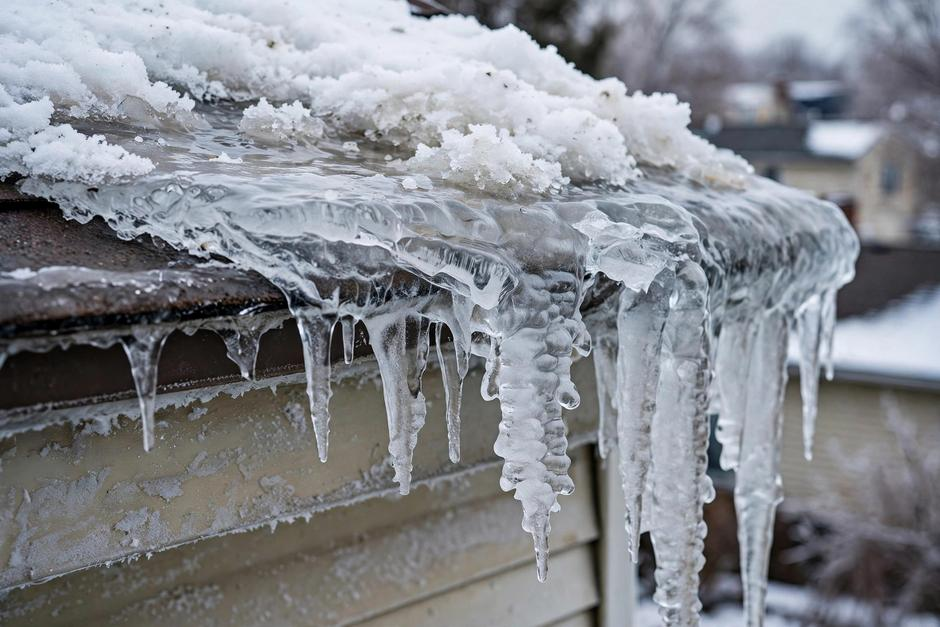

Touhy Avenue
The northern anchor in the blog’s boundary description, and the road south of which the southern-city mix of residential, commercial, industrial, and transportation uses begins.
Orchard Place is a historic southern residential area of Des Plaines, annexed in 1956 according to the City’s history page, sitting next to O’Hare International Airport. Its housing grew piecemeal, lot by lot, so varied ages and forms stand side by side and no single roof pattern can honestly be assigned. WP Exterior Inc serves addresses inside the Des Plaines city limits; call (224) 802-4866 during office hours.
Describe what you are seeing on the roof. Calls are answered during the office hours listed below.
Call (224) 802-4866 → Phone is the only contact channel. No email or online form.With no single pattern, Orchard Place work starts from inspection of the individual house — its era, its form, and its junctions. Related reading: choosing a roofing material for a Des Plaines home and finding a roof leak in an attic. See the full list on the services page.
 Roof RepairRepair topics vary with the house: flashing at a chimney or wall, a pipe boot, a valley, a damaged section. The entry point is found first, in the attic as well as on the roof.View details →
Roof RepairRepair topics vary with the house: flashing at a chimney or wall, a pipe boot, a valley, a damaged section. The entry point is found first, in the attic as well as on the roof.View details → Roof InspectionInspection comes first where ages and forms vary lot by lot. The surface, flashing, valleys, penetrations, and accessible attic conditions are recorded with photographs and written findings, per house.View details →
Roof InspectionInspection comes first where ages and forms vary lot by lot. The surface, flashing, valleys, penetrations, and accessible attic conditions are recorded with photographs and written findings, per house.View details → Emergency Roof RepairEmergency roof repair addresses active leaks and storm breaches. Call during office hours, describe what is happening, and the next step is arranged from there.View details →
Emergency Roof RepairEmergency roof repair addresses active leaks and storm breaches. Call during office hours, describe what is happening, and the next step is arranged from there.View details → Storm Damage Roof RepairStorm damage is recorded with dated photographs and written findings for the homeowner’s own records. The severe-weather window runs April to September in the regional climatology, peaking in June and July.View details →
Storm Damage Roof RepairStorm damage is recorded with dated photographs and written findings for the homeowner’s own records. The severe-weather window runs April to September in the regional climatology, peaking in June and July.View details → Gutter InstallationGutters, downspouts, fascia, and soffit form the drainage edge of the roof, and their condition is assessed per house alongside the roof edge they serve.View details →
Gutter InstallationGutters, downspouts, fascia, and soffit form the drainage edge of the roof, and their condition is assessed per house alongside the roof edge they serve.View details →
Roof Ventilation InstallationVentilation is part of the roof assembly: intake at the soffit, exhaust at the ridge. On older small-lot houses, thin original insulation, blocked soffit vents, and mixed vent types are inspection topics, checked per house.View details → Skylight InstallationSkylight flashing and curb details are repeat leak points on houses of any era. The decision between reflashing and replacing a unit follows inspection of the curb, flashing, and deck around it.View details →
Skylight InstallationSkylight flashing and curb details are repeat leak points on houses of any era. The decision between reflashing and replacing a unit follows inspection of the curb, flashing, and deck around it.View details →
Orchard Place rewards patience: varied houses, a cautious boundary, creek floodplains, and an airport next door. Each house is approached on its own facts.
Small-lot pitched roofs of multiple eras — Cape, ranch, split-level, and gable forms as possibilities only — stand side by side. No Orchard Place age survey was verified, and no uniform description is offered.
How we help: Inspection records what the individual house actually has: its form, its planes, its junctions, and its attic conditions, with photographs and written findings.
Higgins Creek and Willow Creek run through the southern city, and the Willow Creek floodplain contains homes and businesses. Creek-adjacent addresses need flood-map checks — without labelling all of Orchard Place floodplain.
How we help: A FEMA Flood Insurance Rate Map check is made per address where creek questions arise, and flood-zone status is never assumed for any address.
The Residential Sound Insulation Program has treated homes near O’Hare with acoustic windows, doors, and air conditioning. It is a windows-and-doors intervention: it implies no roof replacement, no roof insulation scope, and no roofing need.
How we help: Roofing discussions stay with the roof. Sound-insulation history is per-address context for window and door work already done — nothing more.
Stains on ceilings or walls after rain or thaw
Shingle granules collecting in gutters or at downspouts
Curling, cracking, or missing shingles
Loose flashing at a chimney, wall, or vent penetration
Ice dams forming at eaves or in valleys in winter
The anchors below come from a single local-history blog and from the City’s plan maps, and no surveyed boundary was verified. They are given as approximate surroundings, not as a boundary.
The northern anchor in the blog’s boundary description, and the road south of which the southern-city mix of residential, commercial, industrial, and transportation uses begins.
The eastern anchor in the blog’s description. River Road runs along the river corridor, and addresses near it get per-address jurisdiction and flood-map checks.
The southern anchors in the blog’s description, with I-90 forming a barrier to the largely undeveloped southwestern corner. Higgins Creek runs through the southern city nearby.
The western anchor in the blog’s description, and a border arterial: an address on Mannheim Road may sit in Des Plaines, a neighbouring jurisdiction, or unincorporated ground, checked per address.
WP Exterior Inc serves addresses inside the Des Plaines city limits. A Des Plaines mailing address does not by itself prove an address is inside the city: a large unincorporated area east of I-294 carries Des Plaines mailing addresses but has never been part of the city, and permit jurisdiction follows the city limits. If an address sits near an edge or on a border road, its jurisdiction is checked per address before any permit or service claim is made. Orchard Place addresses sit in the south of the city around the anchors above; jurisdiction is checked per address, especially on border roads such as Mannheim Road, and creek-adjacent addresses get flood-map checks.
Call with the full street address. City maps and county parcel records settle whether an address is inside Des Plaines, and the FEMA Flood Insurance Rate Map is checked per address where floodplain questions arise. No list of ZIP codes is used as a coverage boundary.
“Patryk was great to work with and extremely professional. I highly recommend WP exteriors and plan on using them again in the future!”
Brian Avila Gaona5 months ago · Roof inspection
Google review“I use WP Exteriors to repaint my roof and do as some tuckpointing on the exterior of my building. Pat and his team were very professional and communicative. They did a good job explaining what needs to be done to my home immediately and what I can plan for in the future. I will definitely be using them in the future.”
Patricia Murray2 months ago
Google review“Thank you Patrick for doing an amazing job. Great work me and my wife are very happy. Also thanks for being reliable.”
Phil Negron2 months ago · Gutter repairs
Google reviewCall during office hours if your question is not answered here.
Call (224) 802-4866 →The City's history page gives 1956, and this page follows the City. An encyclopedia source gives 1949; that variant is unresolved and is noted here rather than adopted.
No surveyed boundary was verified. The only boundary description found comes from a single local-history blog — around Touhy Avenue, River Road, Devon Avenue and Higgins Road, and Mannheim Road — so this page phrases the anchors cautiously and draws no boundary.
No. The Residential Sound Insulation Program treats windows, doors, and air conditioning. It implies no roof replacement and no roof insulation scope, and eligibility and past work are per-address matters.
No. Chicago's O'Hare Community Area is a different jurisdiction. Orchard Place is a Des Plaines historic area next to O'Hare Airport, and Des Plaines permit and code facts apply on Des Plaines ground only.
That depends on the house. Varied ages and forms stand lot by lot, so Cape, ranch, split-level, and gable forms are possibilities only, and no single pattern is assigned. Inspection of the individual house settles it.
Call WP Exterior Inc during office hours and describe the house and what you are seeing. Varied houses get individual answers, not area-wide assumptions.
Call (224) 802-4866 during office hours. Tell us the street address and, if you know it, the age and form of the house — and what you are seeing.